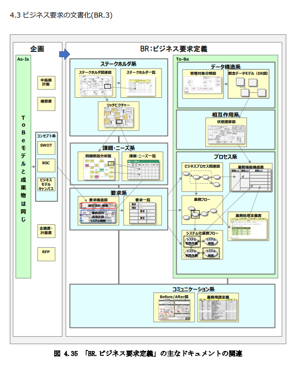

ビジネス要求定義
順に記述していくが、すべて必要に応じてであることを前提としている。
flowchart LR
獲得 --> 分析
分析 --> 文書化
BR. 1 ビジネス要求の獲得
BR 1.1 現状把握
現行踏襲は要件定義ではない、現状を可視化することがスタート。
解決したい問題
-
現行業務を把握するのが困難である
-
リバースエンジニアリング
- システム関連を把握
- 画面遷移
- 現行業務の整理、再学習
- 資料の発掘
方法はなんだろうか。上記に上げたことをどのように行うのか？ツールを使う、インタビューをする、操作をしながら記述をしていく、プロセス図をつくるなどが考えられるだろう。
なぜ行うのだろうか？これは、次の「問題・課題」を抽出するためのインプットとなる。
解決したい課題
分析した人以外誰も内容を把握できず、結果の整合が正しいかわからない
これは次のような解決方法がある。
- 分析結果をプロジェクトメンバーでウォークスルーする
- 運用想定の人材を要件定義（分析）からアサインする
など考えられる。
BR 1.2 問題・課題の抽出
解決したい課題
ステークホルダを見誤り必要な要求が抽出されない
ステークホルダを漏らさないようにする。具体的にはレイヤーを意識
- 経営層、事業部長
- マネージャ・リーダ
- 実務スタッフ
それぞれに別々の関心事があり、それぞれに対立がある。
リッチピクチャの作成の作成などひとつの手段になる
解決したい課題
真の問題・課題の抽出ができない
問題・課題、目的・手段はそれぞれ違う。それを意識して把握する。
これらの違いを意識しないことで、問題課題の把握が不十分だったことがある。USDMでは、要求に「説明」「理由」を追加することで真の要求を抽出しようとする。
関係としては次のようになる
flowchart LR
RR([理由]) --> 要求の源泉_なぜ
RD([説明]) --> 要求の源泉_なぜ
subgraph 要求の源泉_なぜ
M([問題]) --> K([課題])
N([ニーズ]) --> K
end
K --> P([目的（目標）])
K --> S([手段])
subgraph 要求_したい
P
S
end
問題とはあるべき理想とのギャップであり、課題とはその問題を解決するために行うべきこと、そしてその課題を実施することが対策である。
手段とは対策を実行可能な内容で定義したものを指す。「～を実施したい」「～を実行したい
要求は「～したい」と表現できる。「～を実施したい」と「～を達成したい」とあったとき、前者は手段の要求であり、後者は目的の要求である。
さて、この要求はどのレベルか？これはビジネス要求である。真に実現したいものは何かを洗い出すためにこの区分けを行っている。このままシステムの要件にはならない。
原因を見極めるにはなぜなぜ分析を行うとよい。そこで原因を把握したら、解決すべき課題を設定できる。
BR 1.3 ゴール抽出
ゴールにはロールによる目的・目標がある。 - 経営レベル - 業務レベル
それぞれの目的・目標を把握、見極めよう。要件定義では、経営レベルの目的をここで検討するのではない。それは企画でやることである。要件定義ではそれを確認、把握し、整理次へ向かう合意を行うことをする。
つぎに、業務レベルの目的・目標を見極めよう。これには先に上げた目的・手段の違いを意識することも重要である。
目的・目標も違う。目標は目的を達成するためのマイルストーンである。
ここで行うことは、経営レベルの目的（目標）～業務レベルの目的（目標）をつなげていくことである。
BR 1.4 手段抽出
解決したい課題
効果的な手段が抽出できない
先に上げた手段、ということはどういうことか意識し、
- 目的を達成するための目的
- 目的を達成するための手段
の階層を意識する。
目的を達成するために考えた手段は、その手段で十分なのか？目的の目的を分析、理由を喋るか、その手段を説明できるのか？確認しよう。遡っていけばもしかしたら別の手段を洗い出せるかもしれない。
ことシステムの機能要件は「手段」の要求である。そのとき、本当にシステムで解決すべきところなのか、そうではないのか？「手段」はシステム化だけではない。業務自体の見直し、業務の運用の見直しでその「手段」を達成できないか？そしてその手段はなにか目的のためであるのでその目的を達成できるのか？考えていく。
B.R 2 ビジネス要求の分析
p 118
要求で獲得したものを、要求と要求の間の一貫性やつながりを吟味して要求の品質を上げ、また検証を行う。
見直しにより、新たな要求を抽出したり、削除したりする
2.1 要求の体系化
解決したい課題
抽出した要求が全体として効果的かつ必要十分なものになっていない
これには、
- 要求を構造化する
- 妥当性の観点から真の目的を見極める
- 十分性の観点から効果的な手段がないか
要求を構造化する。上位の目的から下位の目的、手段を検証し、それぞれのつながりから上位の目的を叶えるために下位の目的は妥当なのか、手段は妥当なのか検討する。またそれが必要十分なのか、不足はないのか洗い出す。
どうやってやるのか？要求元にインタビューし、本当に要求が妥当なものなのか検証する。
妥当性を検証し、真の目的を見極める 下位の要求（たとえば手段など）から上位（目的）へウォークスローする。下位が上位の要求に対して妥当になっているのかを確認する。そして、その下位から、本当に叶えたかった、真の目的を見極める。
十分性を検証する 上位の要求から下位の要求へ構造を検証する。上位の目的から下位の手段が本当に十分か、他に手段はないのか検証する。
いつまでに解決したいのか確認する
2.2 要求の具体化
解決したい課題
要求を反映した業務の情報構造にならない
- 情報の整理ができていない
- 構造を把握していない
- データモデルは業務部門には作成が難しい
=>
管理対象のバリエーションを整理する これは分類、整理になる。整理の基本は「同じ」「違う」「部分」である。
分類に名前をつける
分類の廃止を検討する
管理のバリエーションを整理する
業務ルールと照らして概念データモデルを引く
解決したい課題
要求を反映した業務プロセスにならない
- ビジネスプロセスが変わらない
- 業務プロセスを標準家できない
- 変革ポイントがわからない
- ようきゅうがはんえいされているかわからない
->
ビジネスプロセス関連図 --> 業務フロー --> システム化業務フロー で体系化、整理をする。
要求との紐づけをする 作成した文書をウォークスルーし、要求がみたせているのか確認する
業務プロセスを整理 連結・削除・平衡化・集約 を検討する
業務パッケージの導入を検討する
解決したい課題
情報と業務プロセスの関係が複雑で不整合が発生している
- 情報と業務プロセスの整合性がとれていない
- 業務パターンが多い
->
相互作用のモデルを下記、情報、業務プロセスの両面から業務の実現性を確認する
振る舞いのモデルとは、状態遷移図やCRUD図二代表されるモデルである。
2.3 優先順位付け
2.4 要求の交渉
B.R 3 ビジネス要求の文書化
3.1 ビジネス要求の文書化
